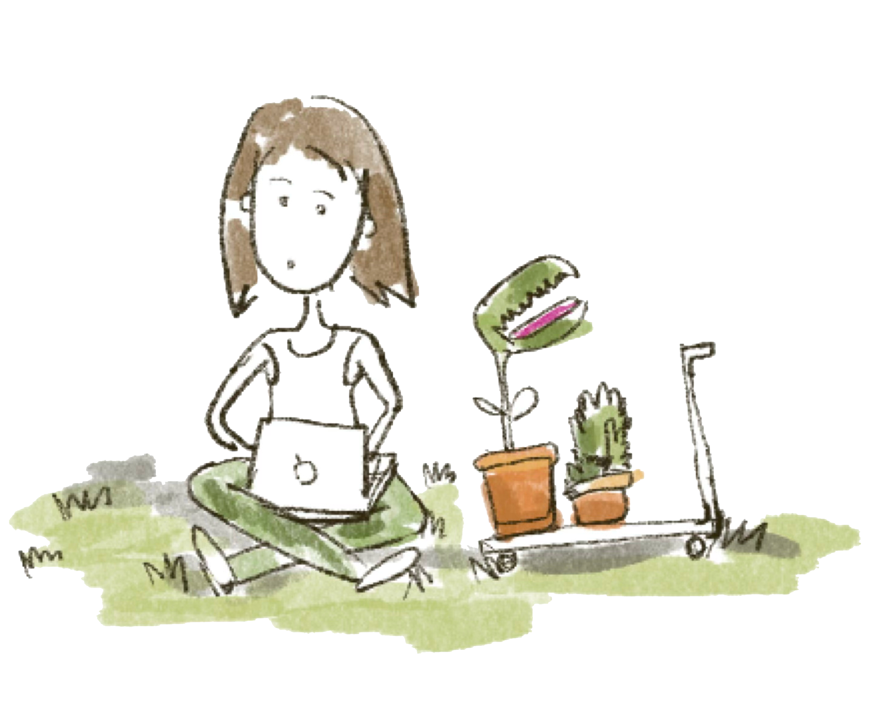
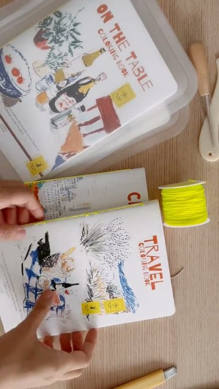
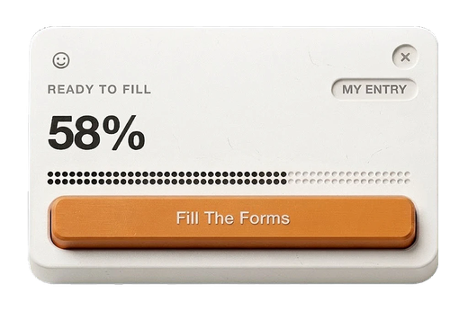

Hello, I'm Risti! Currently Fractional UX Lead at Context Labs
To me design is contextual and taste is practiced. In the past 10+ years, I've:
- contributed to multinationals across APAC, UK, and Japan reaching 35M MAU
- helped early-stage startups find product market fit
I treat portfolio as a trailer, not the full film.

I've been shaped by experiences in diverse industries focus, stages of company maturity, from Individual contributor to leadership position. I gained my experience across agriculture, travel, supply chain operations, fintech, edtech, and SAAS enterprise.
Study Case




Onceover, Chrome Extension for Job Autofills (Unreleased)AI & Vibe Coding
Applying for jobs is operationally heavy and emotionally draining. Onceover takes the position of being functional yet delightful for autofilling job forms.
Concert Info for BTSAI & Vibe Coding
A concert info hub for Indonesian ARMY. 419 visitors in 30 days, 35 returning, 1m 45s average session. Zero ad spend.

Campaign Report as Sankey DiagramAI & Vibe Coding
Combined technical report with AI visual design to create playful, engaging campaign reports for a local food distributor.

Design Project CatalogueAnalogue Craft
Lead for layout design and creative direction for a Design Exhibition, partnering with illustrators on the visual narrative.

Wooden Box CreationAnalogue Craft
Small wooden boxes made without a single drop of glue. Pure wood joinery, exploring different joint types and compositions.

How to make an industrialized product feel less industrial?Analogue Craft
Before: all white, straight from the factory. After: wood texture added by hand.